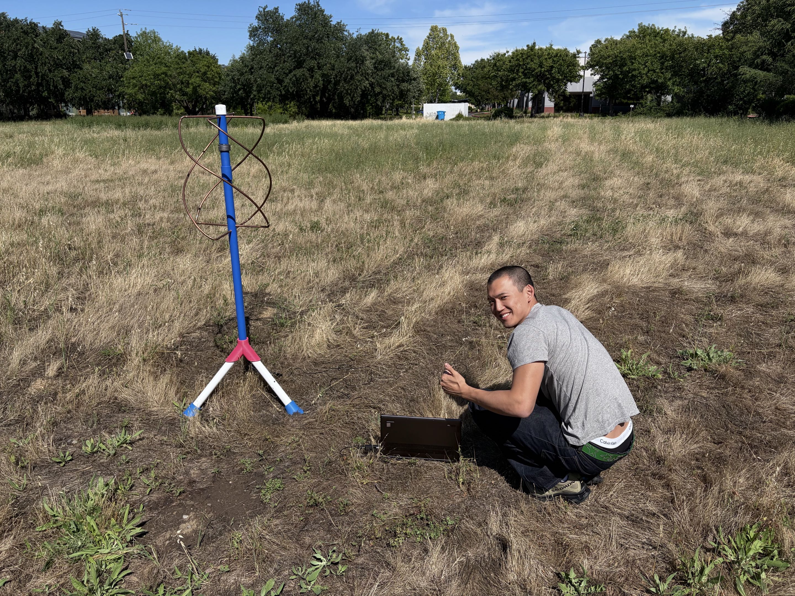
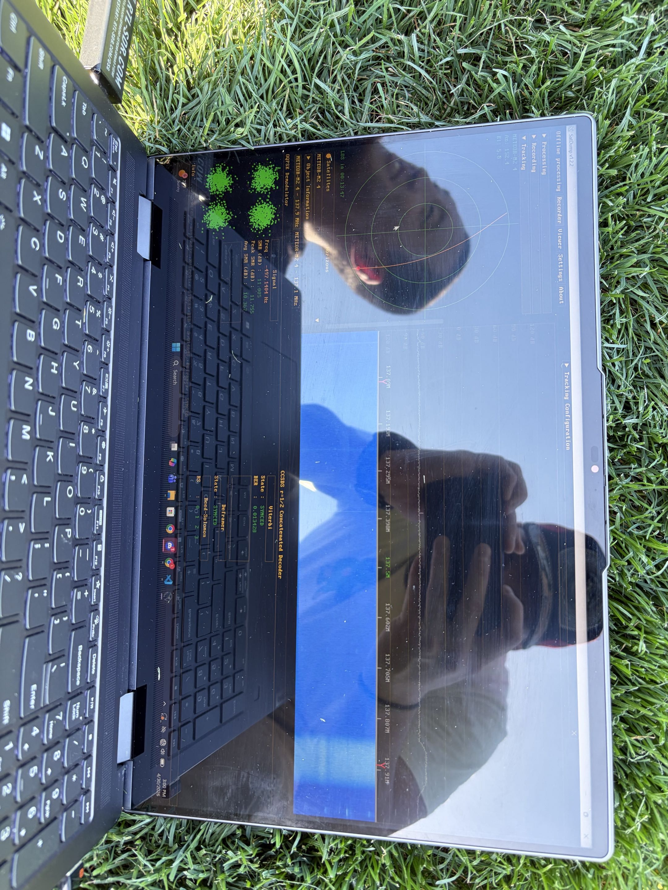
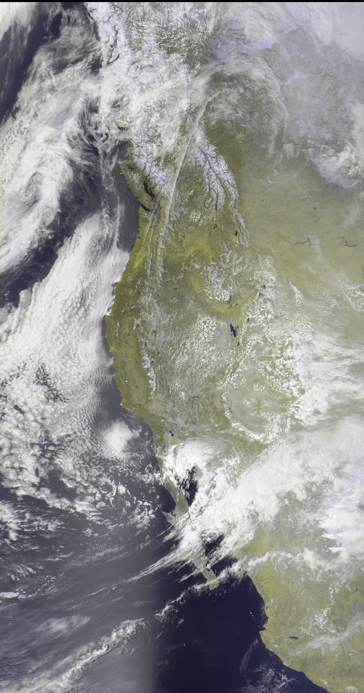
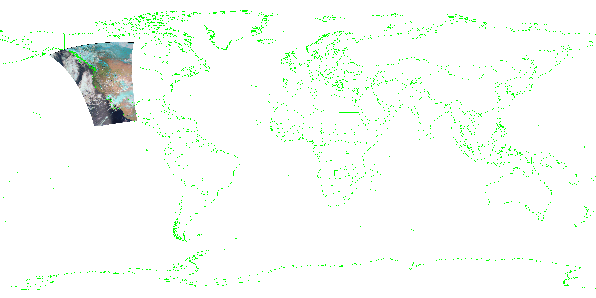
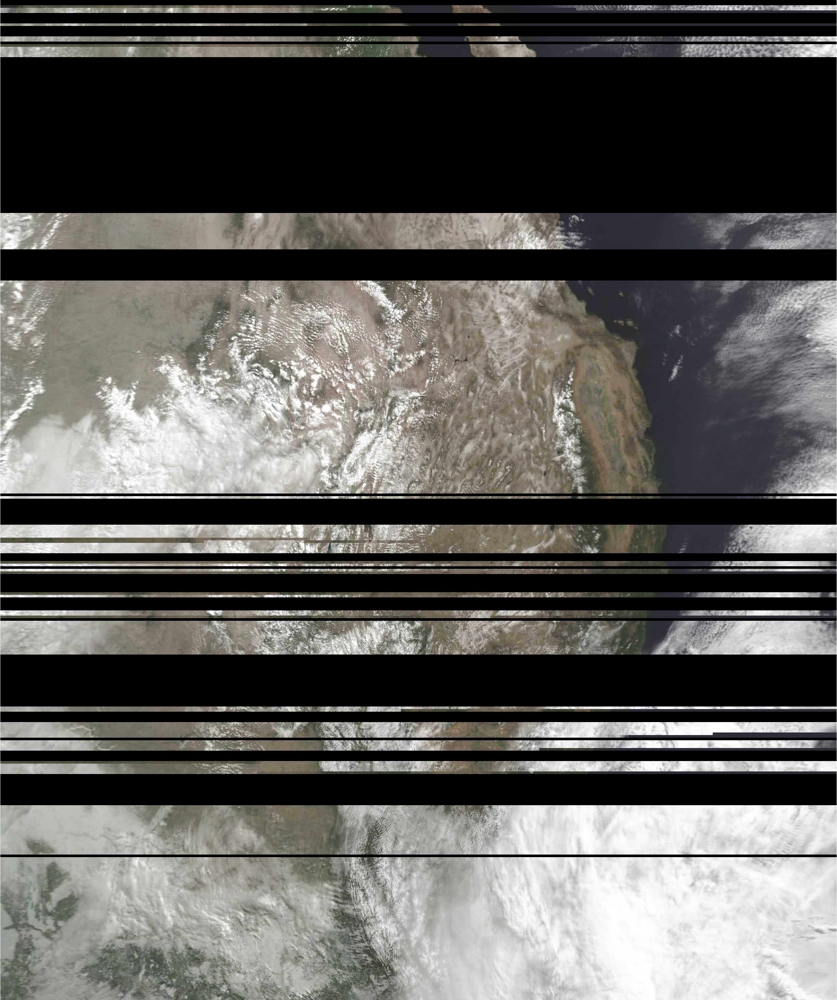
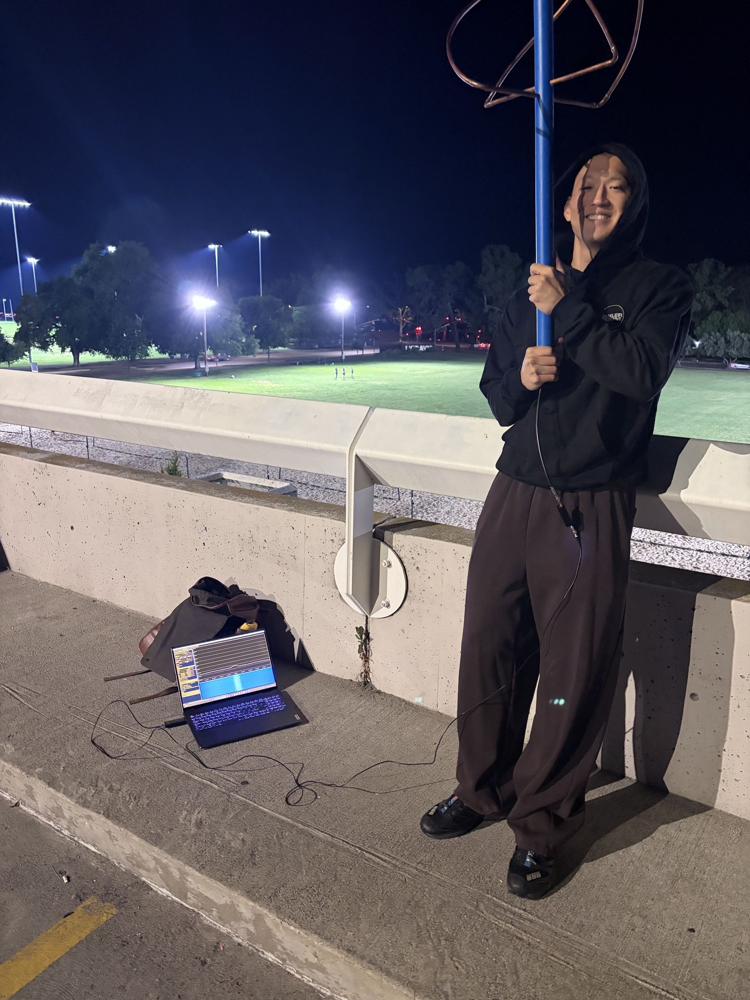
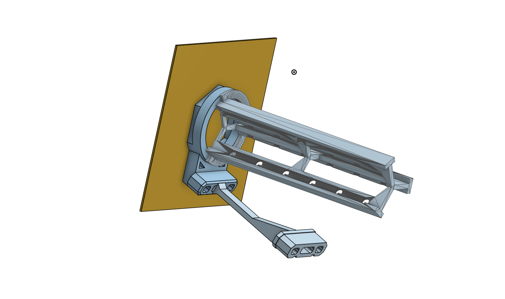

Spacecraft Systems · Capstone
ODIN — Spacecraft Inspection Mission
Senior capstone design of ODIN (Optical Detection & INspection), a heliocentric
spacecraft that rendezvouses with and inspects ESA's Solar Orbiter to assess degradation
for mission extension. I led the Communications & C&DH subsystem across requirements,
CONOPS, architecture, and the Critical Design Review.
Systems Eng.
MATLAB
FreeFlyer
X-Band
Communications · C&DH
ODIN Communications & C&DH Subsystem
Detailed subsystem report for ODIN's X-band deep-space link. Covers redundant transponders,
TWTA and HGA/LGA architecture, a link budget holding ≥6 dB margin from 0.7–2.0 AU, CCSDS
framing, data-rate sizing, housekeeping budgets, ESTRACK/DSN compatibility, and contact-window
analysis.
Link Budget
CCSDS
Excel
LaTeX
RF Hardware · Research · Trial-and-Error Debugging
MOON Ground Station — Building a 137 MHz QFH Antenna
This project was not a clean “build antenna, receive image” demo. It became an iterative RF
debugging process: proving the signal path with a hand-tracked dipole, fabricating a better
QFH antenna, fighting signal blackouts in the field, discovering how sensitive the setup was
to height, reflections, gain, and local interference, and then using each failed pass to decide
what to test next.
RTL-SDR V4
SatDump
SDR#
QFH Antenna
137 MHz
QPSK / CCSDS
VNA
3D Printing
Onshape
Parabolic Dish
From signal blackouts to a working satellite image
Meteor-M2-3 and Meteor-M2-4 downlink imagery near 137 MHz, so the goal was to build a
practical receiver chain that could turn a faint LEO weather-satellite pass into decoded
imagery. The story below shows the real engineering path: first proving reception was possible,
then fabricating hardware, then troubleshooting the environment until the waterfall finally
locked cleanly.

01 · Fabrication
Moving from a hand-tracked dipole to a purpose-built QFH.
The first field tests used a simple dipole antenna and manual tracking. It proved the
satellites were receivable, but the pointing precision was unforgiving. That pushed us to
build a quadrifilar helical antenna tuned for the 137 MHz Meteor downlink using lab tools,
3D-printed parts, drilling, welding, and hands-on fabrication.
Problem: reception was possible, but not robust

02 · Open field test run
We moved into an open field to reduce clutter and RF interference.
We brought the QFH to a flat field outside the lab because it gave us the cleanest RF
environment we could find: fewer nearby objects, fewer reflections, and less interference.
That mattered more than we expected. This test run showed that even an omnidirectional
antenna still depends on a quiet environment if the signal is faint.
Lesson: a flat, low-clutter site helps faint LEO reception

03 · Modified 2 feet up
Small geometry changes made a big RF difference.
At first, the new antenna still did not give us a strong waterfall. After repeated signal
dropouts, we raised the QFH by about two feet so the antenna center would sit in a better
position relative to the ground-reflected signal. We also increased receiver gain because
the LEO downlink was extremely faint by the time it reached the ground.
Fix: raise antenna height + increase gain

04 · Lock
The waterfall finally turned into a usable signal.
With the antenna raised and the gain adjusted, the pass finally produced the kind of signal
we had been chasing. That was the turning point: the antenna was not just a physical build;
it was part of a full receive chain that needed the right height, gain, noise environment,
and pass geometry.
Breakthrough: clean Meteor signal acquired

05 · Full image capture
A clean daytime swath showed what the QFH was built for.
This corrected false-color product from the perfect pass made the payoff visible: clouds,
land, and surface features came through clearly across a wide swath. It was the first time
the receive chain felt reliable instead of lucky.
Result: strong daytime image product from Meteor

06 · Image recovery
The reward was not the picture — it was the full chain working.
A successful pass meant the antenna, LNA/SDR chain, tracking workflow, demodulation,
decoding, and image processing were all working together. The decoded Meteor image became
proof that the ground-station workflow could produce real satellite data, not just RF noise.
Output: decoded LEO weather imagery

07 · Map-aligned product
The rectified image let us verify more than aesthetics.
Once the pass was rectified and overlaid with coastlines, we could confirm that the signal,
timing, and decode pipeline were behaving properly. It turned the result from a “nice picture”
into evidence that the receive and processing workflow was technically sound.
Check: decode and map alignment made sense

08 · Global projection
The projected swath showed where the pass sat in the bigger picture.
Seeing the image placed onto a world map connected the received data to the actual orbital
geometry. It made the project feel less like a lab exercise and more like a real ground
station participating in an Earth-observation workflow.
Context: one clean pass became a mapped observation

09 · Night-pass lesson
Not every bad image meant bad hardware.
This was from the nighttime test before the successful run, not the rooftop attempt. The
black bands and grainy image taught us that artifacts can be diagnostics, not just failures.
It also showed that daylight passes are much better for useful imagery and that the receive
chain benefits from a flat environment with as few obstructions and RF interferers as possible.
Lesson: daylight matters, and environment matters too

10 · Current challenge: rooftop reception
The rooftop should have been better — instead it gave 0 SNR.
The next step was mounting the QFH on the lab rooftop, but the RF environment changed
completely. The roof is surrounded by metal HVAC structures and a nearby Wi-Fi tower; on a
high-elevation pass, the system still reported 0 SNR. Our working hypothesis is that strong
nearby signals and multipath reflections are overwhelming the receiver, so we are now using
a VNA to study antenna response and planning a 137 MHz bandpass filter before moving toward
GEO reception.
Next: VNA testing + 137 MHz filtering, then GEO
Phase 2 · Designing for GEO — Parabolic Dish
The QFH proved the receive chain on LEO Meteor passes, but geostationary satellites sit
roughly 36,000 km out and need far more gain than an omnidirectional antenna can deliver.
The next phase is a parabolic dish, modeled in Onshape to size reflector diameter, focal
length, and feed-horn placement for the gain and beamwidth the GEO link budget demands.
The CAD assembly is shown below.

Parabolic dish feeder · Onshape CAD · click to enlarge
Mission Design · Showcase
ODIN Design Showcase Posters
The public-facing poster set for ODIN, summarizing the full mission across navigation and
systems engineering; thermal, structures, and propulsion; and ADCS, payload, power, and
communications — including spacecraft properties, the GNC CONOPS, and subsystem highlights.
Systems
OnShape
Mission Design
Numerical Simulation · NeuralX
SPH Fluid Simulation
Real-time Smoothed Particle Hydrodynamics simulation built during a research internship at
NeuralX. Implemented particle-based density, pressure, viscosity, and interaction models on
GPU compute shaders, then profiled and optimized the pipeline for interactive fluid behavior.
Unity
C#
HLSL
Compute Shaders
Compressible Aerodynamics
Supersonic Wedge Shock-Wave Analysis
Study of oblique-shock formation over a 2-D wedge at Mach 2.0, 2.5, and 3.0 with 5°, 10°,
and 15° half-angles. Compared shock angles from the θ–β–M relation, Schlieren imagery, and
ANSYS Fluent Mach contours, with side-by-side figures and post-shock property tables.
ANSYS Fluent
CFD
θ–β–M
Stability & Control
Aircraft Dynamics, Stability & Control
Two EAE 129 projects: a state-space simulation of longitudinal aircraft response with
handling-qualities and reduced-order analysis, plus a wind-tunnel study of the Aggie UAV's
static stability — deriving stability derivatives, neutral point, stability margin, and
trimmed elevator angle from measured lift and moment data.
MATLAB
Simulink
Flying Qualities